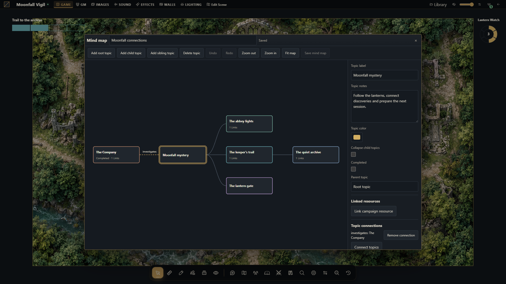

Mapas mentais colaborativos
Relacione tópicos da campanha, autorize jogadores a editar e vincule 37 tipos de recursos nativos.


Crie um grafo
Abra Mapas mentais no dock inferior da mesa ou no gestor. O mestre cria o mapa, escolhe escopo de campanha/cena, visibilidade e editores. Mapas novos são exclusivos do mestre. Adicione tópicos raiz, filhos ou irmãos, edite notas/cor/conclusão, recolha ramos e crie conexões adicionais com rótulos. Arraste tópicos; arraste o espaço vazio para mover a câmera, use zoom ou Enquadrar mapa.
Desfazer/refazer altera o rascunho local. Salvar mapa mental envia a versão esperada. Um conflito preserva o rascunho e oferece recarregamento explícito, sem substituir silenciosamente outro editor. Fechar alterações pendentes pede confirmação para descartá-las.
Conceda o acesso pretendido
Todos os mestres editam mapas. Visível para jogadores concede leitura; jogadores escolhidos como editores também podem ler e editar um mapa privado pela mesa. Eles podem renomear o mapa e editar tópicos, mas não mudar escopo, visibilidade, lista de editores nem excluí-lo. Streamers permanecem somente leitura. Mapas de cena também exigem acesso à cena. O gestor continua exclusivo dos mestres.
Notas dos tópicos pertencem ao público de todo o mapa: mantenha preparação privada num mapa privado. Um vínculo oculto não torna privado o texto autoral ao redor.
Vincule recursos da campanha
Use Vincular recurso da campanha para pesquisar 37 tipos nativos autorizados: personagens e arquivos, itens, diários/páginas/missões, cenas e objetos, tokens, encontros, relógios, pistas descobertas, áudio, cartas, compêndios, preparação, ferramentas de criação, mensagens visíveis e mapas mentais. A referência completa lista os tipos e regras de disponibilidade.
Os vínculos guardam identidades tipadas e conferem acesso ao abrir. Não copiam documentos nem concedem permissão. Destinos ausentes e negados aparecem igualmente indisponíveis, sem identificador ou título privado. Salvar outro tópico preserva o vínculo indisponível por marcador opaco; removê-lo exclui a conexão.
Integre e transfira
O MapBuilder oferece Abrir mapa mental e Controlar tópico do mapa mental. Abrir confere cada destinatário; controles de conclusão delegam apenas o efeito configurado. O ensaio nativo reverte efeitos e recibos. Cópias de campanha selecionam Mapas mentais, remapeiam recursos incluídos, preservam IDs locais/texto autoral e limpam concessões de editores da origem. Snapshots restauram as concessões da mesma campanha.
Uma campanha aceita 64 mapas; cada grafo aceita 500 tópicos, 1.000 conexões adicionais, 16 vínculos por tópico e 2.048 no total. Consulte API e limites antes de criar uma integração.